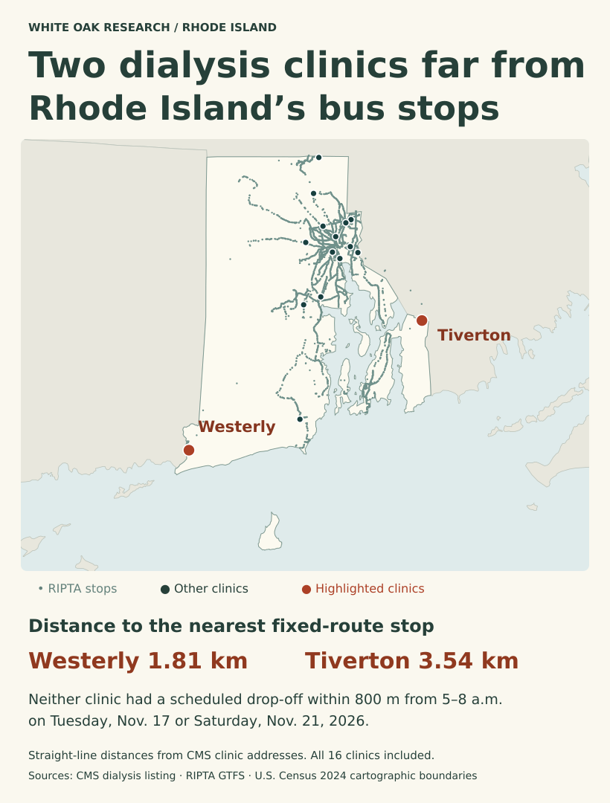

← All analyses
WHITE OAK RESEARCH · RHODE ISLAND
Westerly and Tiverton have the largest gaps in nearby bus service
Tuesday, November 17, 2026 · 5:00 a.m. up to, but excluding, 8:00 a.m.
All 16 clinics, Saturday comparison and methods → · How 107 arrivals become 51 trips · Download portrait SVG · PNG

These two gaps raise a follow-up question: how do patients reach treatment where fixed-route buses stop far from the clinic? Answering it would require information on actual trips, including use of non-emergency medical transportation (NEMT).